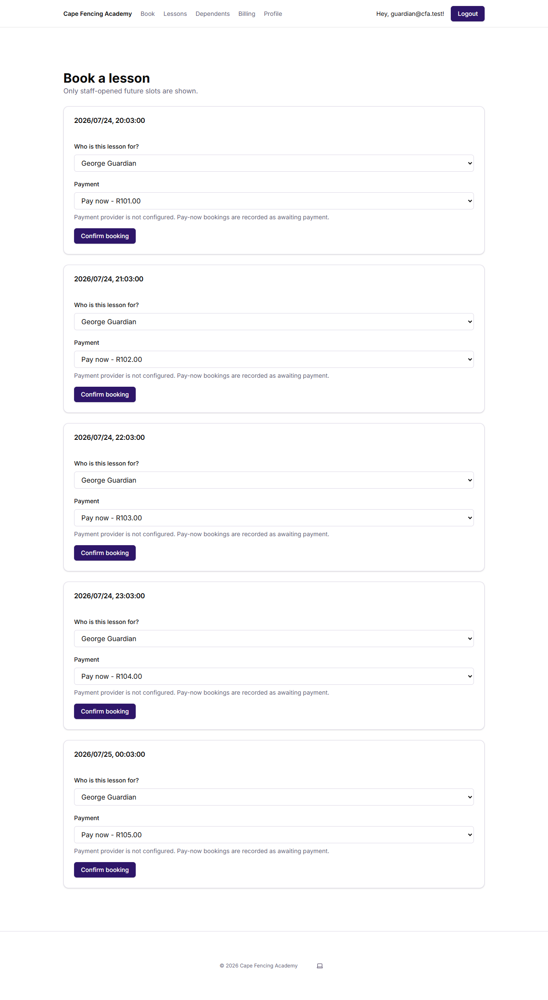

P1·Phase 00·Resolved
Payer cannot identify dependent when booking
The household row was visible, but profiles RLS hid the dependent name from the payer.
Before

Verification
A payer-only same-household select policy exposes Fiona’s name without broadening dependent or cross-household access.